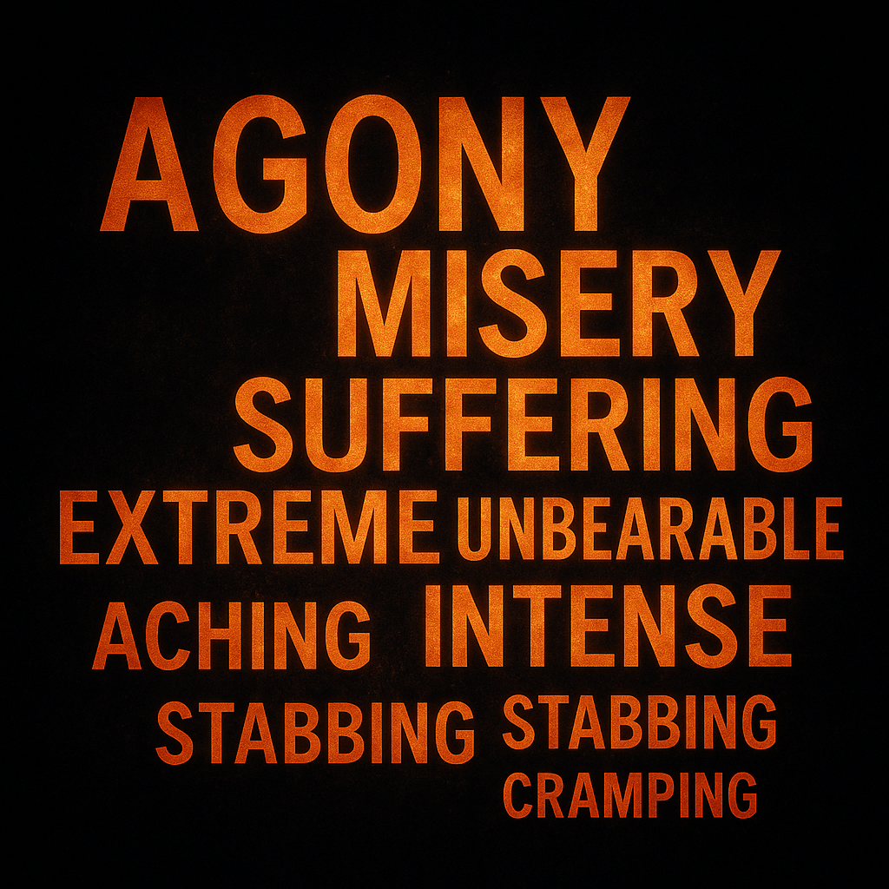

Dataset of Pain Metaphors
Explore how people describe endometriosis pain — metaphors, sensations, and embodied language.
Explore DatasetTurning invisible pain into words
The Language of Endometriosis began as a linguistic investigation into how people describe chronic pain when ordinary words are not enough.
Through research on metaphors, narratives, and patient communication, it explored the ways language shapes understanding, or misunderstanding, of endometriosis.
What started as academic research evolved into a wider advocacy project, amplifying the voices of those whose pain had long been invisible. It brought together science, storytelling, and empathy to influence awareness, education, and healthcare communication.
Today, The Language of Endometriosis continues as a digital initiative, translating research insights into tools that make invisible pain visible, from public resources to the Explain My Pain app. It stands as a bridge between lived experience, linguistic knowledge, and technology.
“That’s the problem with invisible disease. No one knows what we really deal with from day to day.”
“It feels as though my pelvic organs are being carved out with a white-hot yet dull spoon. Sometimes I imagine my uterus trying to claw its way out of my body.”
“The next time you hear about endometriosis, please remember how devastating this disease can be… treat them with respect and compassion.”
“Having a diagnosis was a relief. It meant I wasn’t making things up or exaggerating. I was finally validated in my experiences.”
How linguistic research becomes data, insight, and technology.
Explore how people describe endometriosis pain — metaphors, sensations, and embodied language.
Explore DatasetRead studies, the white paper, essays, and media that connect linguistics, empathy, and care.
Browse PublicationsA bilingual tool that helps patients and clinicians communicate pain clearly and humanely.
Visit AppThese excerpts were shared by participants describing what pain feels like in lived experience.
“Like a rope tightening around my insides…”
“It’s as if ropes are tied tightly around my organs and someone keeps pulling down. Every movement feels like resistance.”
“Like fire under my skin…”
“The burning never stops—like fire trapped under my skin, radiating outward and taking over everything I try to do.”
“The body becomes its own battlefield…”
“Every flare is a fight between parts of myself—one side enduring, the other side surrendering.”
“After surgery, the silence of the body felt louder than pain…”
“The quiet afterwards was eerie. I realised how long I had lived with noise—pain as a constant hum, now replaced by cautious silence.”
“Some days I feel like a story half-told…”
“Because so few words capture this illness, I borrow metaphors, stretch them until they almost fit. The story is still becoming.”